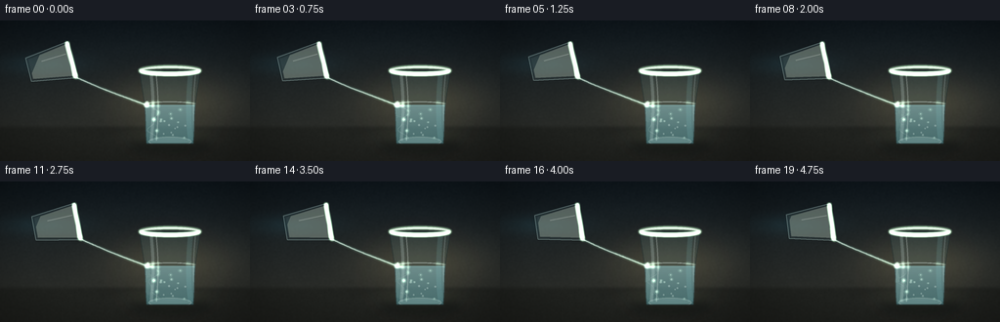
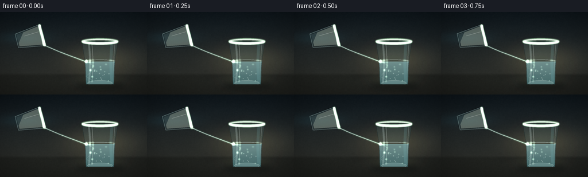
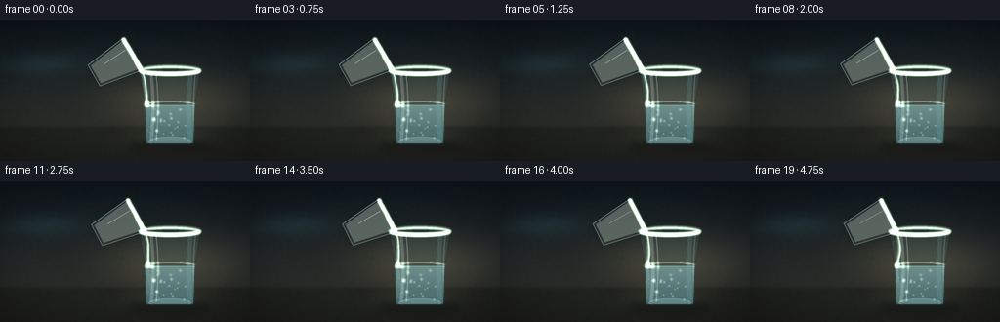
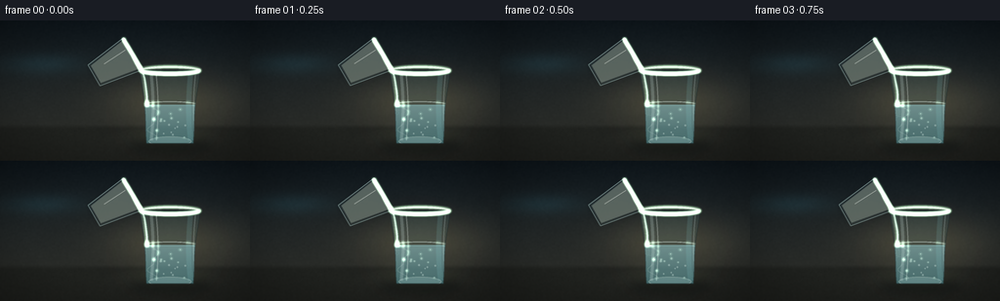

CODING AGENTS AS PIXEL WORLD MODELS
traex/DeepSeek-V4.1-Flash · material_0022
点击播放 · 原生 RGB 像素
逐轮保存的候选
回放视频、检查图与代码变化。
每份候选均可单独播放。实际图片检查记录在下方工具轨迹中。
候选 01播放与检查图
点击播放 · 原生 RGB 像素


展开代码变化
--- 上一保存版本
+++ 本次保存版本
@@ -0,0 +1,646 @@
+from pathlib import Path
+
+import numpy as np
+from PIL import Image, ImageChops, ImageDraw, ImageFilter
+
+import artifact_io
+
+
+ROOT = Path(__file__).resolve().parent
+WIDTH = 256
+HEIGHT = 144
+FRAMES = 20
+FPS = 4.0
+SS = 4
+CW = WIDTH * SS
+CH = HEIGHT * SS
+
+
+def srgb_gradient(top, bottom, height):
+ t = np.linspace(0.0, 1.0, height, dtype=np.float32)[:, None, None]
+ top = np.asarray(top, dtype=np.float32)[None, None, :]
+ bottom = np.asarray(bottom, dtype=np.float32)[None, None, :]
+ return top * (1.0 - t) + bottom * t
+
+
+def smoothstep(edge0, edge1, value):
+ x = np.clip((value - edge0) / (edge1 - edge0), 0.0, 1.0)
+ return x * x * (3.0 - 2.0 * x)
+
+
+def make_background():
+ yy, xx = np.mgrid[0:CH, 0:CW].astype(np.float32)
+ x = xx / (CW - 1)
+ y = yy / (CH - 1)
+
+ back = srgb_gradient((16, 25, 31), (48, 48, 42), CH)
+ back = np.repeat(back, CW, axis=1)
+
+ # Soft pool of warm light behind the glass.
+ dx = (x - 0.68) * 1.1
+ dy = (y - 0.57) * 1.7
+ glow = np.exp(-(dx * dx + dy * dy) * 12.0)[..., None]
+ back += glow * np.array([31.0, 27.0, 18.0], dtype=np.float32)
+
+ # A narrow cool reflection keeps the scene from becoming monochrome.
+ dx = (x - 0.17) * 1.3
+ dy = (y - 0.31) * 2.8
+ cool = np.exp(-(dx * dx + dy * dy) * 24.0)[..., None]
+ back += cool * np.array([5.0, 15.0, 18.0], dtype=np.float32)
+
+ # Table plane and its quiet reflected highlights.
+ horizon = 0.742
+ table = smoothstep(horizon - 0.008, horizon + 0.035, y)[..., None]
+ table_color = np.array([29.0, 31.0, 28.0], dtype=np.float32)
+ back = back * (1.0 - table * 0.80) + table_color * (table * 0.80)
+ reflection = np.exp(-((x - 0.68) ** 2) * 50.0) * np.exp(-((y - 0.83) ** 2) * 240.0)
+ back += reflection[..., None] * np.array([16.0, 17.0, 13.0], dtype=np.float32)
+
+ # Fine film grain, generated deterministically and slightly blurred.
+ rng = np.random.default_rng(20261111)
+ coarse = rng.normal(0.0, 1.0, (CH // 4, CW // 4)).astype(np.float32)
+ grain_img = Image.fromarray(np.clip(coarse * 20.0 + 128.0, 0, 255).astype(np.uint8), "L")
+ grain_img = grain_img.resize((CW, CH), Image.Resampling.BILINEAR).filter(
+ ImageFilter.GaussianBlur(0.55 * SS)
+ )
+ grain = np.asarray(grain_img, dtype=np.float32) - 128.0
+ back += grain[..., None] * 0.075
+
+ # Restrained optical vignette.
+ radial = np.sqrt(((x - 0.52) * 1.03) ** 2 + ((y - 0.53) * 1.25) ** 2)
+ vignette = np.clip((radial - 0.42) / 0.48, 0.0, 1.0)
+ back *= (1.0 - 0.42 * vignette[..., None])
+ return np.clip(back, 0, 255).astype(np.uint8)
+
+
+BACKGROUND = make_background()
+
+
+def overlay(base, layer):
+ return np.asarray(
+ Image.alpha_composite(
+ Image.fromarray(base, "RGB").convert("RGBA"),
+ layer.convert("RGBA"),
+ ).convert("RGB")
+ )
+
+
+def blurred_mask(draw_fn, blur=0.0):
+ image = Image.new("L", (CW, CH), 0)
+ draw_fn(ImageDraw.Draw(image))
+ if blur:
+ image = image.filter(ImageFilter.GaussianBlur(blur * SS))
+ return image
+
+
+def colored_mask(mask, color, opacity=255):
+ layer = Image.new("RGBA", (CW, CH), (*color, 0))
+ alpha = mask.point(lambda value: int(value * opacity / 255))
+ layer.putalpha(alpha)
+ return layer
+
+
+def clip_alpha(layer, mask):
+ alpha = ImageChops.multiply(layer.getchannel("A"), mask)
+ layer = layer.copy()
+ layer.putalpha(alpha)
+ return layer
+
+
+def target_geometry():
+ cx = 174.0
+ top = 51.0
+ bottom = 126.0
+ top_half = 31.0
+ bottom_half = 24.0
+ surface = 87.0
+
+ left_points = []
+ right_points = []
+ for i in range(65):
+ u = i / 64.0
+ y = top + (bottom - top) * u
+ half = top_half + (bottom_half - top_half) * u
+ half -= 1.7 * np.sin(np.pi * u) ** 2
+ left_points.append((cx - half, y))
+ right_points.append((cx + half, y))
+ polygon = left_points + list(reversed(right_points))
+ return cx, top, bottom, top_half, bottom_half, surface, polygon
+
+
+def draw_target_glass(base, t, impact_x):
+ cx, top, bottom, top_half, bottom_half, surface, polygon = target_geometry()
+
+ # A diffuse cast shadow anchors the tumbler to the table.
+ shadow = blurred_mask(
+ lambda d: d.ellipse(
+ (
+ (cx - 43) * SS,
+ (bottom - 5) * SS,
+ (cx + 43) * SS,
+ (bottom + 10) * SS,
+ ),
+ fill=215,
+ ),
+ blur=5.2,
+ )
+ base = overlay(base, colored_mask(shadow, (4, 8, 8), 125))
+
+ body = blurred_mask(
+ lambda d: d.polygon([(x * SS, y * SS) for x, y in polygon], fill=255),
+ blur=0.35,
+ )
+
+ # Rear glass wall and subtle refraction tint.
+ back_tint = colored_mask(body, (103, 151, 151), 36)
+ base = overlay(base, back_tint)
+
+ # Water volume: cool near the surface and deeper teal toward the base.
+ yy, xx = np.mgrid[0:CH, 0:CW].astype(np.float32)
+ v = np.clip((yy / SS - surface) / max(1.0, bottom - surface), 0.0, 1.0)
+ water_rgb = np.stack(
+ (
+ 143.0 - 51.0 * v,
+ 197.0 - 39.0 * v,
+ 202.0 - 37.0 * v,
+ ),
+ axis=-1,
+ )
+ water_mask = Image.fromarray(
+ np.clip((yy / SS >= surface - 0.6) * 255, 0, 255).astype(np.uint8), "L"
+ )
+ water_mask = ImageChops.multiply(water_mask, body)
+ water_alpha = np.asarray(water_mask, dtype=np.float32) * (0.47 + 0.06 * (1.0 - v))
+ water_layer = np.dstack(
+ (np.clip(water_rgb, 0, 255).astype(np.uint8), np.clip(water_alpha, 0, 255).astype(np.uint8))
+ )
+ base = overlay(base, Image.fromarray(water_layer, "RGBA"))
+
+ # Vertical window reflections are refracted by the curved sides.
+ glass_overlay = Image.new("RGBA", (CW, CH), (0, 0, 0, 0))
+ d = ImageDraw.Draw(glass_overlay)
+ for xoff, color, width in [
+ (-19, (224, 245, 239, 54), 3.2),
+ (-14, (243, 251, 244, 75), 1.1),
+ (21, (136, 207, 211, 34), 5.2),
+ (26, (228, 246, 241, 45), 1.3),
+ ]:
+ pts = []
+ for i in range(48):
+ u = i / 47.0
+ y = top + 5 + u * (bottom - top - 8)
+ bend = 1.8 * np.sin(np.pi * u) * (1 if xoff < 0 else -1)
+ pts.append(((cx + xoff + bend) * SS, y * SS))
+ d.line(pts, fill=color, width=max(1, round(width * SS)), joint="curve")
+ base = overlay(base, clip_alpha(glass_overlay, body))
+
+ # Water meniscus and moving elliptical rings.
+ rings = Image.new("RGBA", (CW, CH), (0, 0, 0, 0))
+ rd = ImageDraw.Draw(rings)
+ for k in range(4):
+ phase = (t * 1.55 + k * 0.27) % 1.0
+ radius = 2.0 + phase * 18.0
+ alpha = int(105 * (1.0 - phase) ** 1.8)
+ if alpha > 0:
+ rd.ellipse(
+ (
+ (impact_x - radius) * SS,
+ (surface - radius * 0.19) * SS,
+ (impact_x + radius) * SS,
+ (surface + radius * 0.19) * SS,
+ ),
+ outline=(213, 243, 235, alpha),
+ width=max(1, round(0.9 * SS)),
+ )
+ base = overlay(base, clip_alpha(rings, water_mask))
+
+ surface_layer = Image.new("RGBA", (CW, CH), (0, 0, 0, 0))
+ sd = ImageDraw.Draw(surface_layer)
+ sd.arc(
+ (
+ (cx - top_half + 1.3) * SS,
+ (surface - 4.0) * SS,
+ (cx + top_half - 1.3) * SS,
+ (surface + 4.0) * SS,
+ ),
+ 180,
+ 360,
+ fill=(231, 248, 241, 137),
+ width=max(1, round(0.85 * SS)),
+ )
+ sd.line(
+ (
+ (cx - top_half + 2.5) * SS,
+ surface * SS,
+ (cx + top_half - 2.5) * SS,
+ surface * SS,
+ ),
+ fill=(154, 211, 211, 65),
+ width=max(1, round(0.7 * SS)),
+ )
+ base = overlay(base, clip_alpha(surface_layer, body))
+
+ # Thick glass base.
+ base_layer = Image.new("RGBA", (CW, CH), (0, 0, 0, 0))
+ bd = ImageDraw.Draw(base_layer)
+ bd.ellipse(
+ (
+ (cx - bottom_half + 2) * SS,
+ (bottom - 7) * SS,
+ (cx + bottom_half - 2) * SS,
+ (bottom + 3) * SS,
+ ),
+ fill=(184, 220, 214, 62),
+ outline=(220, 240, 232, 82),
+ width=max(1, round(0.7 * SS)),
+ )
+ bd.arc(
+ (
+ (cx - bottom_half + 2) * SS,
+ (bottom - 7) * SS,
+ (cx + bottom_half - 2) * SS,
+ (bottom + 3) * SS,
+ ),
+ 18,
+ 164,
+ fill=(236, 249, 240, 112),
+ width=max(1, round(0.9 * SS)),
+ )
+ base = overlay(base, clip_alpha(base_layer, body))
+
+ # Dark contour and two bright contour slivers give the glass readable volume.
+ contour = Image.new("RGBA", (CW, CH), (0, 0, 0, 0))
+ cd = ImageDraw.Draw(contour)
+ cd.line(
+ [(x * SS, y * SS) for x, y in polygon] + [(polygon[0][0] * SS, polygon[0][1] * SS)],
+ fill=(16, 32, 35, 116),
+ width=max(1, round(0.85 * SS)),
+ joint="curve",
+ )
+ cd.arc(
+ (
+ (cx - top_half) * SS,
+ (top - 4.0) * SS,
+ (cx + top_half) * SS,
+ (top + 4.0) * SS,
+ ),
+ 0,
+ 360,
+ fill=(226, 244, 236, 185),
+ width=max(1, round(1.0 * SS)),
+ )
+ cd.arc(
+ (
+ (cx - top_half + 1.2) * SS,
+ (top - 2.4) * SS,
+ (cx + top_half - 1.2) * SS,
+ (top + 3.2) * SS,
+ ),
+ 188,
+ 352,
+ fill=(250, 255, 247, 115),
+ width=max(1, round(0.55 * SS)),
+ )
+ base = overlay(base, contour)
+
+ # Small bubbles and suspended highlights.
+ particles = Image.new("RGBA", (CW, CH), (0, 0, 0, 0))
+ pd = ImageDraw.Draw(particles)
+ rng = np.random.default_rng(447)
+ for i in range(17):
+ px = cx - 19 + rng.uniform(0, 38)
+ py = surface + 4 + rng.uniform(0, bottom - surface - 10)
+ radius = rng.uniform(0.45, 1.05)
+ pd.ellipse(
+ (
+ (px - radius) * SS,
+ (py - radius) * SS,
+ (px + radius) * SS,
+ (py + radius) * SS,
+ ),
+ fill=(219, 244, 235, 76),
+ outline=(245, 255, 247, 92),
+ )
+ base = overlay(base, clip_alpha(particles, water_mask))
+ return base, body, water_mask
+
+
+def local_to_world(x, y, center, angle_deg):
+ a = np.deg2rad(angle_deg)
+ dx = x
+ dy = y - 23.0
+ return (
+ center[0] + np.cos(a) * dx - np.sin(a) * dy,
+ center[1] + np.sin(a) * dx + np.cos(a) * dy,
+ )
+
+
+def source_geometry(t):
+ u = t
+ angle = 76.0 + 7.0 * u
+ center = (51.5 + 10.0 * u, 45.0 - 1.5 * u)
+ half_top = 18.5
+ half_bottom = 12.5
+ height = 46.0
+ outer_local = [
+ (-half_top, 0.0),
+ (half_top + 1.5, 0.0),
+ (half_bottom, height),
+ (-half_bottom, height),
+ ]
+ inner_local = [
+ (-half_top + 2.2, 2.0),
+ (half_top - 1.4, 2.0),
+ (half_bottom - 2.3, height - 2.6),
+ (-half_bottom + 2.3, height - 2.6),
+ ]
+ outer = [local_to_world(x, y, center, angle) for x, y in outer_local]
+ inner = [local_to_world(x, y, center, angle) for x, y in inner_local]
+ lip = local_to_world(half_top - 0.8, 0.9, center, angle)
+ rim_left = local_to_world(-half_top + 1.0, 1.0, center, angle)
+ return center, angle, outer, inner, lip, rim_left
+
+
+def draw_source_glass(base, t):
+ center, angle, outer, inner, lip, rim_left = source_geometry(t)
+
+ shadow = blurred_mask(
+ lambda d: d.polygon([(x * SS, y * SS) for x, y in outer], fill=155),
+ blur=4.4,
+ )
+ base = overlay(base, colored_mask(shadow, (4, 8, 9), 46))
+
+ outer_mask = blurred_mask(
+ lambda d: d.polygon([(x * SS, y * SS) for x, y in outer], fill=255),
+ blur=0.3,
+ )
+ inner_mask = blurred_mask(
+ lambda d: d.polygon([(x * SS, y * SS) for x, y in inner], fill=255),
+ blur=0.25,
+ )
+ base = overlay(base, colored_mask(outer_mask, (139, 180, 179), 27))
+
+ # Tilted liquid settles toward the pouring lip.
+ yy, xx = np.mgrid[0:CH, 0:CW].astype(np.float32)
+ level = 39.2 + 1.8 * t
+ fluid_plane = ((xx / SS) + 0.42 * (yy / SS) > level + 16.0).astype(np.uint8) * 255
+ fluid_plane = Image.fromarray(fluid_plane, "L")
+ fluid_mask = ImageChops.multiply(inner_mask, fluid_plane)
+ fluid = colored_mask(fluid_mask, (199, 211, 188), 72)
+ base = overlay(base, fluid)
+
+ glass = Image.new("RGBA", (CW, CH), (0, 0, 0, 0))
+ gd = ImageDraw.Draw(glass)
+ gd.polygon([(x * SS, y * SS) for x, y in inner], fill=(191, 221, 215, 13))
+ gd.line(
+ [(x * SS, y * SS) for x, y in outer] + [(outer[0][0] * SS, outer[0][1] * SS)],
+ fill=(196, 229, 223, 142),
+ width=max(1, round(0.9 * SS)),
+ joint="curve",
+ )
+ gd.line(
+ (
+ rim_left[0] * SS,
+ rim_left[1] * SS,
+ lip[0] * SS,
+ lip[1] * SS,
+ ),
+ fill=(241, 251, 243, 218),
+ width=max(1, round(1.45 * SS)),
+ )
+ gd.line(
+ (
+ (rim_left[0] + 1.0) * SS,
+ (rim_left[1] + 1.3) * SS,
+ (lip[0] - 1.2) * SS,
+ (lip[1] + 1.1) * SS,
+ ),
+ fill=(88, 148, 149, 92),
+ width=max(1, round(0.55 * SS)),
+ )
+
+ # One crisp reflection along the body.
+ p0 = local_to_world(-6.5, 5.0, center, angle)
+ p1 = local_to_world(-5.1, 31.0, center, angle)
+ gd.line(
+ (p0[0] * SS, p0[1] * SS, p1[0] * SS, p1[1] * SS),
+ fill=(249, 255, 246, 102),
+ width=max(1, round(0.65 * SS)),
+ )
+ base = overlay(base, clip_alpha(glass, outer_mask))
+
+ # A tiny bright bead at the lip sells the viscous liquid.
+ bead = Image.new("RGBA", (CW, CH), (0, 0, 0, 0))
+ bd = ImageDraw.Draw(bead)
+ bd.ellipse(
+ (
+ (lip[0] - 1.4) * SS,
+ (lip[1] - 1.4) * SS,
+ (lip[0] + 1.4) * SS,
+ (lip[1] + 1.4) * SS,
+ ),
+ fill=(225, 238, 212, 122),
+ outline=(251, 255, 240, 155),
+ width=max(1, round(0.45 * SS)),
+ )
+ base = overlay(base, bead)
+ return base, lip
+
+
+def bezier_points(p0, p1, p2, count=50):
+ u = np.linspace(0.0, 1.0, count)[:, None]
+ p0 = np.asarray(p0, dtype=np.float32)
+ p1 = np.asarray(p1, dtype=np.float32)
+ p2 = np.asarray(p2, dtype=np.float32)
+ return (1 - u) ** 2 * p0 + 2 * (1 - u) * u * p1 + u ** 2 * p2
+
+
+def draw_stream(base, t, lip, impact):
+ start = np.array([lip[0] + 0.3, lip[1] + 1.0], dtype=np.float32)
+ end = np.array([impact[0], impact[1] - 0.2], dtype=np.float32)
+ control = np.array([start[0] + 17.0, start[1] + 8.5], dtype=np.float32)
+ pts = bezier_points(start, control, end, 58)
+
+ # Slight traveling undulation in the viscous rope.
+ for i in range(len(pts)):
+ u = i / (len(pts) - 1)
+ pts[i, 0] += np.sin(u * 8.0 + t * 9.0) * 0.34 * np.sin(np.pi * u)
+
+ stream = Image.new("RGBA", (CW, CH), (0, 0, 0, 0))
+ sd = ImageDraw.Draw(stream)
+ pxy = [(float(x) * SS, float(y) * SS) for x, y in pts]
+ sd.line(
+ pxy,
+ fill=(28, 57, 60, 98),
+ width=max(1, round(2.8 * SS)),
+ joint="curve",
+ )
+ sd.line(
+ pxy,
+ fill=(199, 226, 218, 132),
+ width=max(1, round(1.45 * SS)),
+ joint="curve",
+ )
+
+ highlight = [(x - 0.7 * SS, y - 0.15 * SS) for x, y in pxy]
+ sd.line(
+ highlight,
+ fill=(245, 255, 247, 163),
+ width=max(1, round(0.38 * SS)),
+ joint="curve",
+ )
+ base = overlay(base, stream)
+
+ # Glycerin accumulates into a small hanging drop before meeting the surface.
+ drop = Image.new("RGBA", (CW, CH), (0, 0, 0, 0))
+ dd = ImageDraw.Draw(drop)
+ rx = 1.55 + 0.18 * np.sin(t * 7.0)
+ ry = 2.05 + 0.22 * np.cos(t * 5.0)
+ dd.ellipse(
+ (
+ (impact[0] - rx) * SS,
+ (impact[1] - ry - 2.2) * SS,
+ (impact[0] + rx) * SS,
+ (impact[1] + ry - 2.2) * SS,
+ ),
+ fill=(208, 230, 218, 90),
+ outline=(246, 255, 244, 123),
+ width=max(1, round(0.4 * SS)),
+ )
+ return overlay(base, drop)
+
+
+def draw_mixing(base, water_mask, impact, t):
+ cx, top, bottom, top_half, bottom_half, surface, polygon = target_geometry()
+ mixing = Image.new("RGBA", (CW, CH), (0, 0, 0, 0))
+ md = ImageDraw.Draw(mixing)
+
+ # Denser glycerin sinks and curls outward in faint refractive tendrils.
+ rng = np.random.default_rng(917)
+ for j in range(18):
+ onset = 0.02 + 0.038 * j
+ age = np.clip((t - onset) / (1.0 - onset + 0.001), 0.0, 1.0)
+ if age <= 0:
+ continue
+ depth = (bottom - surface - 3.0) * (0.22 + 0.78 * age)
+ side = rng.uniform(-1.0, 1.0)
+ amp = rng.uniform(1.6, 5.8)
+ freq = rng.uniform(1.4, 3.2)
+ phase = rng.uniform(0.0, np.pi * 2.0)
+ drift = rng.uniform(-2.8, 2.8)
+ points = []
+ for k in range(28):
+ u = k / 27.0
+ y = surface + 1.0 + depth * u
+ wave = np.sin(u * np.pi * freq + phase + t * 1.1) * amp * u
+ x = impact[0] + drift * u * u + wave
+ x += side * 2.2 * u
+ points.append((x * SS, y * SS))
+ alpha = int(np.clip(21 + 34 * age, 0, 56))
+ color = (207, 230, 217, alpha) if j % 3 else (145, 207, 209, alpha)
+ width = max(1, round((0.65 + rng.uniform(0.0, 0.65)) * SS))
+ md.line(points, fill=color, width=width, joint="curve")
+
+ # Soft localized plumes near the impact point.
+ for j in range(7):
+ age = np.clip((t - 0.05 - j * 0.055) / 0.9, 0.0, 1.0)
+ if age <= 0:
+ continue
+ center_y = surface + 5.0 + (j * 3.2 + age * 15.0)
+ center_x = impact[0] + np.sin(j * 2.1 + t * 2.2) * (1.0 + age * 3.4)
+ rx = 2.2 + age * 4.5
+ ry = 1.2 + age * 3.0
+ md.ellipse(
+ (
+ (center_x - rx) * SS,
+ (center_y - ry) * SS,
+ (center_x + rx) * SS,
+ (center_y + ry) * SS,
+ ),
+ fill=(194, 222, 210, int(13 + 13 * age)),
+ )
+
+ # A moving caustic on the inside of the far wall.
+ caustic = []
+ for k in range(42):
+ u = k / 41.0
+ y = surface + 3.0 + u * (bottom - surface - 8.0)
+ x = cx - 17.0 + 4.3 * np.sin(u * 7.0 + t * 2.0) + 2.1 * np.sin(u * 15.0 - t)
+ caustic.append((x * SS, y * SS))
+ md.line(caustic, fill=(224, 248, 237, 34), width=max(1, round(0.65 * SS)), joint="curve")
+ mixing = clip_alpha(mixing, water_mask)
+ return overlay(base, mixing)
+
+
+def add_bloom_and_finish(frame):
+ image = Image.fromarray(frame, "RGB")
+
+ # Gentle highlight bloom, restricted to bright pixels.
+ array = np.asarray(image, dtype=np.float32)
+ luminance = array.max(axis=2)
+ bright = np.clip((luminance - 170.0) / 85.0, 0.0, 1.0)
+ bright_img = Image.fromarray((bright * 255).astype(np.uint8), "L").filter(
+ ImageFilter.GaussianBlur(1.15 * SS)
+ )
+ bloom = np.asarray(bright_img, dtype=np.float32)[..., None] * np.array(
+ [11.0, 14.0, 11.0], dtype=np.float32
+ )
+ array += bloom
+
+ # Very light chromatic warmth in the highlights.
+ array[..., 0] += np.clip(array.mean(axis=2) - 176.0, 0.0, 50.0) * 0.025
+ array[..., 2] += np.clip(115.0 - array.mean(axis=2), 0.0, 50.0) * 0.012
+ image = Image.fromarray(np.clip(array, 0, 255).astype(np.uint8), "RGB")
+ return image.resize((WIDTH, HEIGHT), Image.Resampling.LANCZOS)
+
+
+def render_frame(index):
+ t = index / (FRAMES - 1)
+ base = BACKGROUND.copy()
+
+ impact_x = 150.5 + 0.9 * np.sin(t * 3.0)
+ _, _, _, _, _, surface, _ = target_geometry()
+
+ # A diffuse backlight bloom behind the target glass.
+ glow = blurred_mask(
+ lambda d: d.ellipse((126 * SS, 54 * SS, 220 * SS, 132 * SS), fill=125),
+ blur=15.0,
+ )
+ base = overlay(base, colored_mask(glow, (177, 154, 98), 23))
+
+ base, body, water_mask = draw_target_glass(base, t, impact_x)
+ base, lip = draw_source_glass(base, t)
+ base = draw_stream(base, t, lip, (impact_x, surface))
+ base = draw_mixing(base, water_mask, (impact_x, surface), t)
+
+ # Front rim is redrawn last so the stream visibly passes behind it.
+ cx, top, bottom, top_half, bottom_half, surface, polygon = target_geometry()
+ rim = Image.new("RGBA", (CW, CH), (0, 0, 0, 0))
+ rd = ImageDraw.Draw(rim)
+ rd.arc(
+ (
+ (cx - top_half) * SS,
+ (top - 4.0) * SS,
+ (cx + top_half) * SS,
+ (top + 4.0) * SS,
+ ),
+ 8,
+ 172,
+ fill=(238, 250, 242, 166),
+ width=max(1, round(0.9 * SS)),
+ )
+ base = overlay(base, rim)
+
+ return np.asarray(add_bloom_and_finish(base), dtype=np.uint8)
+
+
+def main():
+ frames = np.stack([render_frame(i) for i in range(FRAMES)], axis=0)
+ assert frames.shape == (FRAMES, HEIGHT, WIDTH, 3)
+ assert frames.dtype == np.uint8
+ artifact_io.save(frames, ROOT)
+ print(f"saved {FRAMES} frames to {ROOT}")
+
+
+if __name__ == "__main__":
+ main()
候选 02播放与检查图
点击播放 · 原生 RGB 像素


展开代码变化
--- 上一保存版本
+++ 本次保存版本
@@ -337,8 +337,8 @@
def source_geometry(t):
u = t
- angle = 76.0 + 7.0 * u
- center = (51.5 + 10.0 * u, 45.0 - 1.5 * u)
+ angle = 60.0 + 4.0 * u
+ center = (116.0 + 6.0 * u, 45.0 - 1.0 * u)
half_top = 18.5
half_bottom = 12.5
height = 46.0
@@ -458,7 +458,7 @@
def draw_stream(base, t, lip, impact):
start = np.array([lip[0] + 0.3, lip[1] + 1.0], dtype=np.float32)
end = np.array([impact[0], impact[1] - 0.2], dtype=np.float32)
- control = np.array([start[0] + 17.0, start[1] + 8.5], dtype=np.float32)
+ control = np.array([start[0] + 7.0, start[1] + 13.0], dtype=np.float32)
pts = bezier_points(start, control, end, 58)
# Slight traveling undulation in the viscous rope.
可观测工具轨迹
实际执行的命令与返回图片。
命令 1exit 0
/bin/bash -c "pwd && rg --files -g 'prompt.txt' -g 'GENERATION_RULES.md' -g 'task_spec.json' -g '"'!node_modules'"' -g '"'!vendor'"'"
命令 2exit 0
/bin/bash -c "git status --short && find . -maxdepth 2 -type f | sed 's#"'^./##'"' | sort | head -200"
命令 3exit 0
/bin/bash -c 'cat prompt.txt'
命令 4exit 0
/bin/bash -c 'cat GENERATION_RULES.md'
命令 5exit 0
/bin/bash -c 'cat task_spec.json'
命令 6exit 0
/bin/bash -c 'command -v ffmpeg; command -v blender; command -v node; command -v chromium; command -v google-chrome; command -v python3; fc-list | head -20'
命令 7exit 0
/bin/bash -c "sed -n '1,240p' artifact_io.py"
命令 8exit 0
/bin/bash -c "python3 - <<'PY'
import numpy, PIL
print('numpy', numpy.__version__)
print('PIL', PIL.__version__)
PY"命令 9exit 0
/bin/bash -c "python3 - <<'PY' from PIL import Image import numpy as np for fn in ['/usr/share/fonts/truetype/dejavu/DejaVuSans.ttf','/usr/share/fonts/truetype/dejavu/DejaVuSerif.ttf']: print(fn) PY"
命令 10exit 0
/bin/bash -c 'python3 generate.py'
命令 11exit 0
/bin/bash -c "python3 - <<'PY'
from PIL import Image
import numpy as np
im=np.asarray(Image.open('frames/09.png').convert('RGB')).astype(float)
# 64x36 luminance block preview
chars=' .,:;irsXA253hMHGS#9B&@'
g=im.mean(2)
h,w=g.shape
for y in range(0,h,4):
row=''
for x in range(0,w,4):
v=g[y:y+4,x:x+4].mean()
row+=chars[min(len(chars)-1,int(v/256*len(chars)))]
print(row)
PY"命令 12exit 0
/bin/bash -c "python3 - <<'PY'
from PIL import Image
im=Image.open('inspection.png')
print(im.size)
PY"命令 13exit 0
/bin/bash -c "python3 - <<'PY'
from pathlib import Path
from PIL import Image
import numpy as np
files=sorted(Path('frames').glob('*.png'))
arr=np.stack([np.asarray(Image.open(f).convert('RGB')) for f in files])
print('frames',arr.shape,'dtype',arr.dtype,'fps',20/5)
print('range',arr.min(),arr.max(),'mean',round(float(arr.mean()),2),'std',round(float(arr.std()),2))
d=np.abs(np.diff(arr.astype(np.int16),axis=0))
print('frame diff mean/min/max',round(float(d.mean()),3),round(float(d.min()),3),round(float(d.max()),3))
print('nonidentical transitions',int(np.sum(np.any(arr[1:]"'!=arr[:-1],axis=(1,2,3)))))
print('"'files',[(p.name,p.stat().st_size) for p in files[:2]],'...',[(p.name,p.stat().st_size) for p in files[-2:]])
for name in ['pixels.npz','inspection.png','transition_check.png','index.html','generate.py']:
p=Path(name); print(name,p.exists(),p.stat().st_size if p.exists() else None)
PY"命令 14exit 0
/bin/bash -c 'python3 generate.py'
命令 15exit 0
/bin/bash -c "python3 - <<'PY'
from PIL import Image
import numpy as np
im=np.asarray(Image.open('frames/09.png').convert('RGB')).astype(float)
chars=' .,:;irsXA253hMHGS#9B&@'
g=im.mean(2); h,w=g.shape
for y in range(0,h,4):
row=''
for x in range(0,w,4):
v=g[y:y+4,x:x+4].mean(); row+=chars[min(len(chars)-1,int(v/256*len(chars)))]
print(row)
PY"命令 16exit 0
/bin/bash -c "python3 - <<'PY'
from pathlib import Path
from PIL import Image
import numpy as np, json
files=sorted(Path('frames').glob('*.png'))
arr=np.stack([np.asarray(Image.open(f).convert('RGB')) for f in files])
spec=json.loads(Path('task_spec.json').read_text())
assert arr.shape==(spec['frames'],spec['height'],spec['width'],3)
assert arr.dtype==np.uint8
d=np.abs(np.diff(arr.astype(np.int16),axis=0))
# Brightness/color diversity and border checks.
print('shape:',arr.shape,'mean:',round(float(arr.mean()),2),'temporal-diff:',round(float(d.mean()),3))
print('all transitions animated:',bool(np.all(d.mean(axis=(1,2,3))>0)))
print('corners:',arr[0,0,0].tolist(),arr[0,0,-1].tolist(),arr[0,-1,0].tolist(),arr[0,-1,-1].tolist())
print('artifact files:',sorted(p.name for p in Path('.').glob('*') if p.is_file()))
PY"命令 17exit 0
/bin/bash -c "python3 - <<'PY'
from PIL import Image
import numpy as np
for f in ['frames/00.png','frames/06.png','frames/12.png','frames/19.png']:
a=np.asarray(Image.open(f).convert('RGB'))
print(f, 'mean',round(float(a.mean()),1),'sat',round(float((a.max(2)-a.min(2)).mean()),1),'bright%',round(float((a.max(2)>220).mean()*100),2))
PY"命令 18exit 0
/bin/bash -c 'python3 -m py_compile generate.py && git status --short -- .'
命令 19exit 0
/bin/bash -c 'ls -lh frames/00.png frames/09.png frames/19.png pixels.npz inspection.png index.html generate.py'
保存候选 2 份；完成命令 19 次；可验证图片返回 0 张。原始 API 响应与完整日志保留在本地。